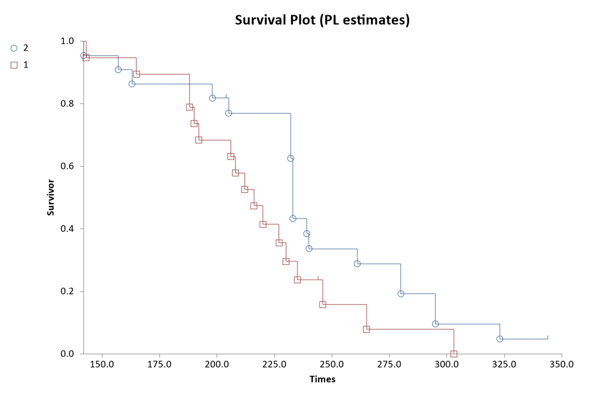
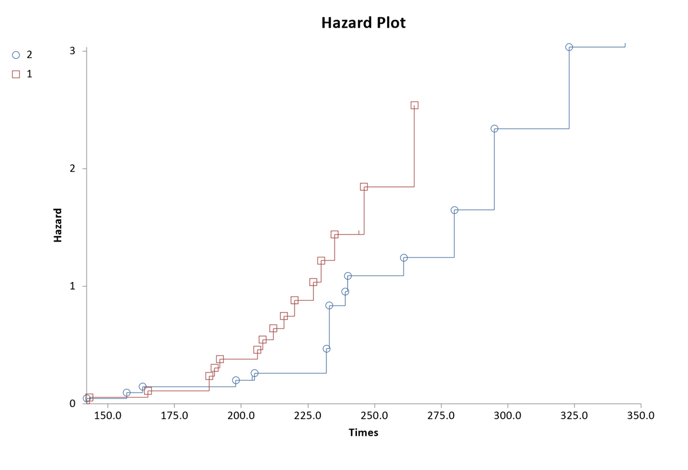
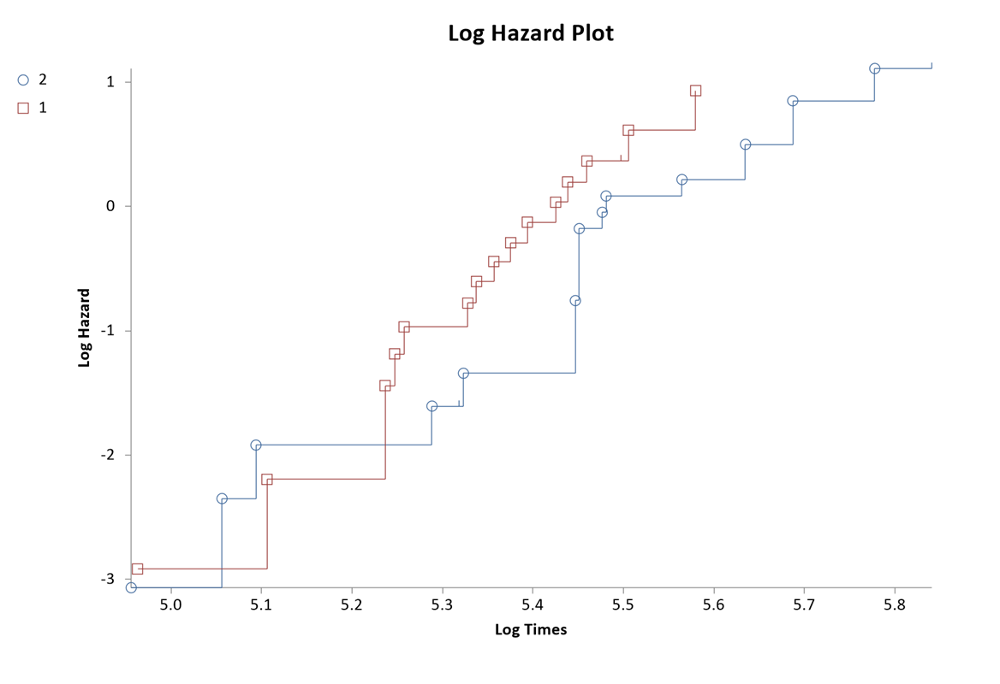
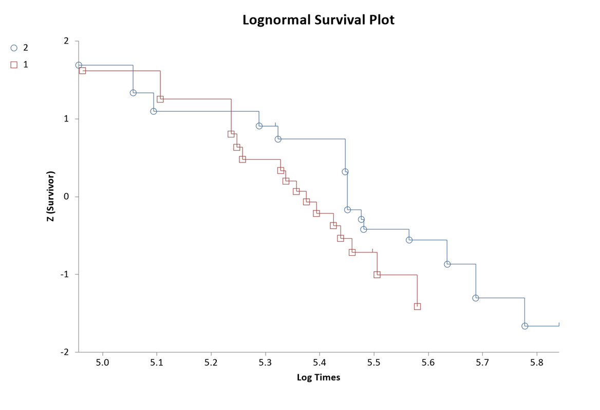
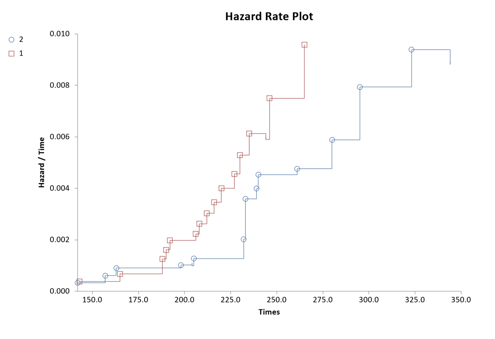

Kaplan-Meier Survival Estimates
Menu location: Analysis_Survival_Kaplan-Meier.
This function estimates survival rates and hazard from data that may be incomplete.
The survival rate is expressed as the survivor function (S):
$\displaystyle S_t=\frac{\text{number of individuals surviving longer than t}}{\text{total number of individuals studied}}$
- where t is a time period known as the survival time, time to failure or time to event (such as death); e.g. 5 years in the context of 5 year survival rates. Some texts present S as the estimated probability of surviving to time t for those alive just before t multiplied by the proportion of subjects surviving to t. Thus it reflects the probability of no event before t. At t=0 S(t) = 1 and decreases toward 0 as t increases toward infinity.
The product limit (PL) method of Kaplan and Meier (1958) is used to estimate S:
$\displaystyle \hat{S}_t=\prod_{t_i \le t} \left[1-\frac{d_i}{n_i}\right]$
- where ti is duration of study at point i, di is number of deaths up to point i and ni is number of individuals at risk just prior to ti. S is based upon the probability that an individual survives at the end of a time interval, on the condition that the individual was present at the start of the time interval. S is the product (P) of these conditional probabilities.
If a subject is last followed up at time ti and then leaves the study for any reason (e.g. lost to follow up) ti is counted as their censorship time.
Assumptions:
- Censored individuals have the same prospect of survival as those who continue to be followed. This can not be tested for and can lead to a bias that artificially reduces S.
- Survival prospects are the same for early as for late recruits to the study (can be tested for).
- The event studied (e.g. death) happens at the specified time. Late recording of the event studied will cause artificial inflation of S.
The instantaneous hazard function h(t) [also known as the hazard rate, conditional failure rate or force of mortality] is defined as the event rate at time t conditional on surviving up to or beyond time t. As h(t) is a rate, not a probability, it has units of 1/t. The cumulative hazard function H_hat (t) is the integral of the hazard rates from time 0 to t, which represents the accumulation of the hazard over time - mathematically this quantifies the number of times you would expect to see the failure event in a given time period, if the event was repeatable. So it is more accurate to think of hazards in terms of rates than probabilities. The cumulative hazard is estimated by the method of Peterson (1977) as:
$\displaystyle \hat{H}_t=-\ln({\hat{S}_t})$
S and H with their standard errors and confidence intervals can be saved to a workbook for further analysis (see below).
Median and mean survival time
The median survival time is calculated as the smallest survival time for which the survivor function is less than or equal to 0.5. If the survivor function is exactly 0.5 from that time until the next time of death then the median is the midpoint of the two times, just as the median of an even number of uncensored times is the midpoint of the two middle values. Some data sets may not get this far, in which case their median survival time is not calculated. A confidence interval for the median survival time is constructed using a robust nonparametric method due to Brookmeyer and Crowley (1982): its limits are the first times at which the lower and the upper confidence limits of the survivor function (the estimate minus and plus the normal deviate times its standard error) are less than or equal to 0.5. The interval therefore runs from the first time at which the survivor function does not differ significantly from 0.5 up to the time of death that follows the last such time. If the upper confidence limit of the survivor function never falls to 0.5 then the data set no upper limit for the median, and the upper limit is given as infinity. These are the rules used by R and SAS. Another confidence interval for the median survival time is constructed using a large sample estimate of the density function of the survival estimate (Andersen, 1993). The density at the median is estimated from the slope of the survivor function between the last time at which it is 0.55 or more and the first time at which it is 0.45 or less, whatever the confidence level. If there are many tied survival times then the Brookmeyer-Crowley limits should not be used.
Mean survival time is estimated as the area under the survival curve. The estimator is based upon the entire range of data. Note that some software uses only the data up to the last observed event; Hosmer and Lemeshow (1999) point out that this biases the estimate of the mean downwards, and they recommend that the entire range of data is used. A large sample method is used to estimate the variance of the mean survival time and thus to construct a confidence interval (Andersen, 1993).
Samples of survival times are frequently highly skewed, therefore, in survival analysis, the median is generally a better measure of central location than the mean.
Plots
StatsDirect can calculate S and H for more than one group at a time and plot the survival and hazard curves for the different groups together. Four different plots are given and certain distributions are indicated if these plots form a straight line pattern (Lawless, 1982; Kalbfleisch and Prentice, 1980). The plots and their associated distributions are:
Plot Distribution indicated by a straight line pattern
H vs. t Exponential, through the origin with slope λ
ln(H) vs. ln(t) Weibull, slope beta and intercept beta ln(lambda)
z(S) vs. ln(t) Log-normal
H/t vs. t Linear hazard rate
- where t is time, ln is natural (base e) logarithm, z(p) is the p quantile from the standard normal distribution and λ (lambda) is the real probability of event/death at time t.
For survival plots that display confidence intervals, save the results of this function to a workbook and use the Survival function of the graphics menu.
Note that censored times are marked with a small vertical tick on the survival curve; you have the option to turn this off. If you want to use markers for observed event/death/failure times then please check the box when prompted.
Technical validation
The variance of S is estimated using the method of Greenwood (1926):
$\displaystyle \text{var}(\hat{S}_t) = \hat{S}_t^2 \sum_{t_i \le t} \frac{d_i}{n_i (n_i - d_i)}$
- The confidence interval for the survivor function is not calculated directly using Greenwood's variance estimate as this would give impossible results (< 0 or > 1) at extremes of S. The confidence interval for S uses an asymptotic maximum likelihood solution by log transformation as recommended by Kalbfleisch and Prentice (1980).
The cumulative hazard function is estimated as minus the natural logarithm of the product limit estimate of the survivor function as above (Peterson, 1977). Note that some statistical software calculates the simpler Nelson-Aalen estimate (Nelson, 1972; Aalen, 1978):
$\displaystyle \tilde{H}_t = \sum_{t_i \le t} \frac{d_i}{n_i}$
A Nelson-Aalen hazard estimate will always be less than an equivalent Peterson estimate and there is no substantial case for using one in favour of the other.
The variance of H hat is estimated as:
$\displaystyle \text{var}(\hat{H}_t) = \frac{\text{var}(\hat{S}_t)}{\hat{S}_t^2}$
Further analysis
S and H do not assume specific distributions for survival or hazard curves. If survival plots indicate specific distributions then more powerful estimates of S and H might be achieved by modelling. The commonest model is exponential but Weibull, log-normal, log-logistic and Gamma often appear. An expert Statistician and specialist software (e.g. GLIM, R, MLP and some of the SAS modules) should be employed to pursue this sort of work. In most situations, however, you should consider improving the estimates of S and H by using Cox regression rather than parametric models.
If the hazard is constant over time then a plot of H vs. time will resemble a straight line with slope λ. If this is true then:
Probability of survival beyond t = exponent(-λ * t)
- this eases the calculation of relative risk from the ratio of hazard functions at time t on two survival curves. When the hazard function depends on time then you can usually calculate relative risk after fitting Cox's proportional hazards model. This model assumes that for each group the hazard functions are proportional at each time, it does not assume any particular distribution function for the hazard function. Proportional hazards modelling can be very useful, however, most researchers should seek statistical guidance with this.
Example
Test workbook (Survival worksheet: Group Surv, Time Surv, Censor Surv).
In a hypothetical example, death from a cancer after exposure to a particular carcinogen was measured in two groups of rats. Group 1 had a different pre-treatment régime to group 2. The time from pre-treatment to death is recorded. If a rat was still living at the end of the experiment or it had died from a different cause then that time is considered " censored". A censored observation is given the value 0 in the death/censorship variable to indicate a "non-event".
Group 1: 143, 165, 188, 188, 190, 192, 206, 208, 212, 216, 220, 227, 230, 235, 246, 265, 303, 216*, 244*
Group 2: 142, 157, 163, 198, 205, 232, 232, 232, 233, 233, 233, 233, 239, 240, 261, 280, 280, 295, 295, 323, 204*, 344*
* = censored data
To analyse these data in StatsDirect you must first prepare them in three workbook columns appropriately labelled:
| Group Surv | Time Surv | Censor Surv |
| 2 | 142 | 1 |
| 1 | 143 | 1 |
| 2 | 157 | 1 |
| 2 | 163 | 1 |
| 1 | 165 | 1 |
| 1 | 188 | 1 |
| 1 | 188 | 1 |
| 1 | 190 | 1 |
| 1 | 192 | 1 |
| 2 | 198 | 1 |
| 2 | 204 | 0 |
| 2 | 205 | 1 |
| 1 | 206 | 1 |
| 1 | 208 | 1 |
| 1 | 212 | 1 |
| 1 | 216 | 0 |
| 1 | 216 | 1 |
| 1 | 220 | 1 |
| 1 | 227 | 1 |
| 1 | 230 | 1 |
| 2 | 232 | 1 |
| 2 | 232 | 1 |
| 2 | 232 | 1 |
| 2 | 233 | 1 |
| 2 | 233 | 1 |
| 2 | 233 | 1 |
| 2 | 233 | 1 |
| 1 | 235 | 1 |
| 2 | 239 | 1 |
| 2 | 240 | 1 |
| 1 | 244 | 0 |
| 1 | 246 | 1 |
| 2 | 261 | 1 |
| 1 | 265 | 1 |
| 2 | 280 | 1 |
| 2 | 280 | 1 |
| 2 | 295 | 1 |
| 2 | 295 | 1 |
| 1 | 303 | 1 |
| 2 | 323 | 1 |
| 2 | 344 | 0 |
Alternatively, open the test workbook using the file open function of the file menu. Then select Kaplan-Meier from the Survival Analysis section of the analysis menu. Select the column marked "Group Surv" when asked for the group identifier, select "Time Surv" when asked for times and "Censor Surv" when asked for deaths/events. Click on No when you are asked whether or not you want to save the estimates and confidence intervals to the workbook.
For this example:
Kaplan-Meier survival estimates
Group Surv = 2
| Time | At risk | Dead | Censored | S | SE(S) | H | SE(H) |
| 142 | 22 | 1 | 0 | 0.954545 | 0.044409 | 0.04652 | 0.046524 |
| 157 | 21 | 1 | 0 | 0.909091 | 0.061291 | 0.09531 | 0.06742 |
| 163 | 20 | 1 | 0 | 0.863636 | 0.073165 | 0.146603 | 0.084717 |
| 198 | 19 | 1 | 0 | 0.818182 | 0.08223 | 0.200671 | 0.100504 |
| 204 | 18 | 0 | 1 | 0.818182 | 0.08223 | 0.200671 | 0.100504 |
| 205 | 17 | 1 | 0 | 0.770053 | 0.090387 | 0.261295 | 0.117378 |
| 232 | 16 | 3 | 0 | 0.625668 | 0.105069 | 0.468935 | 0.16793 |
| 233 | 13 | 4 | 0 | 0.433155 | 0.108192 | 0.836659 | 0.249777 |
| 239 | 9 | 1 | 0 | 0.385027 | 0.106338 | 0.954442 | 0.276184 |
| 240 | 8 | 1 | 0 | 0.336898 | 0.103365 | 1.087974 | 0.306814 |
| 261 | 7 | 1 | 0 | 0.28877 | 0.099172 | 1.242125 | 0.34343 |
| 280 | 6 | 2 | 0 | 0.192513 | 0.086369 | 1.64759 | 0.44864 |
| 295 | 4 | 2 | 0 | 0.096257 | 0.064663 | 2.340737 | 0.671772 |
| 323 | 2 | 1 | 0 | 0.048128 | 0.046941 | 3.033884 | 0.975335 |
| 344 | 1 | 0 | 1 | 0.048128 | 0.046941 | 3.033884 | 0.975335 |
Median survival time = 233
Andersen 95% CI for median survival time = 231.898503 to 234.101497
Brookmeyer-Crowley 95% CI for median survival time = 232 to 261
Mean survival time (95% CI) [limit: 344 on 323] = 241.283422 (219.591463 to 262.975382)
Group Surv = 1
| Time | At risk | Dead | Censored | S | SE(S) | H | SE(H) |
| 143 | 19 | 1 | 0 | 0.947368 | 0.051228 | 0.054067 | 0.054074 |
| 165 | 18 | 1 | 0 | 0.894737 | 0.070406 | 0.111226 | 0.078689 |
| 188 | 17 | 2 | 0 | 0.789474 | 0.093529 | 0.236389 | 0.11847 |
| 190 | 15 | 1 | 0 | 0.736842 | 0.101023 | 0.305382 | 0.137102 |
| 192 | 14 | 1 | 0 | 0.684211 | 0.106639 | 0.37949 | 0.155857 |
| 206 | 13 | 1 | 0 | 0.631579 | 0.110665 | 0.459532 | 0.175219 |
| 208 | 12 | 1 | 0 | 0.578947 | 0.113269 | 0.546544 | 0.195646 |
| 212 | 11 | 1 | 0 | 0.526316 | 0.114549 | 0.641854 | 0.217643 |
| 216 | 10 | 1 | 1 | 0.473684 | 0.114549 | 0.747214 | 0.241825 |
| 220 | 8 | 1 | 0 | 0.414474 | 0.114515 | 0.880746 | 0.276291 |
| 227 | 7 | 1 | 0 | 0.355263 | 0.112426 | 1.034896 | 0.316459 |
| 230 | 6 | 1 | 0 | 0.296053 | 0.108162 | 1.217218 | 0.365349 |
| 235 | 5 | 1 | 0 | 0.236842 | 0.10145 | 1.440362 | 0.428345 |
| 244 | 4 | 0 | 1 | 0.236842 | 0.10145 | 1.440362 | 0.428345 |
| 246 | 3 | 1 | 0 | 0.157895 | 0.093431 | 1.845827 | 0.591732 |
| 265 | 2 | 1 | 0 | 0.078947 | 0.072792 | 2.538974 | 0.922034 |
| 303 | 1 | 1 | 0 | 0 | * | infinity | * |
Median survival time = 216
Andersen 95% CI for median survival time = 199.619628 to 232.380372
Brookmeyer-Crowley 95% CI for median survival time = 192 to 235
Mean survival time (95% CI) = 218.684211 (200.363485 to 237.004936)
Below is the classical "survival plot" showing how survival declines with time. The approximate linearity of the log hazard vs. log time plot below indicates a Weibull distribution of survival.

The legend labels each curve with its value of the group identifier (here Group Surv), listing the groups in the order in which they first occur in the data.




At this point you might want to run a formal hypothesis test to see if there is any statistical evidence for two or more survival curves being different. This can be achieved using sensitive parametric methods if you have fitted a particular distribution curve to your data. More often you would use the Log-rank and Wilcoxon tests which do not assume any particular distribution of the survivor function.
 R code
R code
This R code reproduces the example above. It uses the survival package, which comes with R, and was checked with R 4.6.1. Paste it into R, or save it as a script and run it.
# Kaplan-Meier survival estimates: the StatsDirect help example (a hypothetical study
# of death from cancer in two groups of rats given different pre-treatments; the test
# workbook's Survival worksheet columns Group Surv, Time Surv and Censor Surv) in R
if (!requireNamespace("survival", quietly = TRUE)) install.packages("survival", repos = "https://cloud.r-project.org")
library(survival)
group <- c(2, 1, 2, 2, 1, 1, 1, 1, 1, 2, 2, 2, 1, 1, 1, 1, 1, 1, 1, 1, 2, 2, 2, 2, 2,
2, 2, 1, 2, 2, 1, 1, 2, 1, 2, 2, 2, 2, 1, 2, 2)
time <- c(142, 143, 157, 163, 165, 188, 188, 190, 192, 198, 204, 205, 206, 208, 212,
216, 216, 220, 227, 230, 232, 232, 232, 233, 233, 233, 233, 235, 239, 240,
244, 246, 261, 265, 280, 280, 295, 295, 303, 323, 344)
event <- c(1, 1, 1, 1, 1, 1, 1, 1, 1, 1, 0, 1, 1, 1, 1, 0, 1, 1, 1, 1, 1, 1, 1, 1, 1,
1, 1, 1, 1, 1, 0, 1, 1, 1, 1, 1, 1, 1, 1, 1, 0) # 1 = death, 0 = censored
# The groups in the order in which they first occur, as StatsDirect lists them
g <- factor(group, levels = unique(group))
# R's standard estimate: survfit gives the product limit estimate of S with Greenwood's
# variance. conf.type = "plain" makes its limits S +/- z SE(S), the scale on which the
# Brookmeyer-Crowley interval for the median is set (R's default is the log scale).
# print(fit) gives the median, the Brookmeyer-Crowley limits for it and, with
# rmean = "individual", the mean survival time restricted to each group's own longest
# time, as in the report.
fit <- survfit(Surv(time, event) ~ g, conf.type = "plain")
print(fit, rmean = "individual")
print(summary(fit, censored = TRUE))
# The report's tables: every distinct time, with the cumulative hazard H = -ln(S)
# (Peterson) and its standard error from Greenwood's sum, which is SE(S) / S
six <- function(x) formatC(x, digits = 6, format = "f", drop0trailing = TRUE)
z <- qnorm(0.975)
s <- summary(fit, censored = TRUE)
H <- log(1 / s$surv)
means <- summary(fit, rmean = "individual")$table
for (k in levels(s$strata)) {
i <- s$strata == k
t <- s$time[i]
n <- s$n.risk[i]
d <- s$n.event[i]
S <- s$surv[i]
seS <- s$std.err[i]
seH <- sqrt(cumsum(d / (n * (n - d)))) # infinite once S reaches 0
cat("\nGroup Surv =", sub("^g=", "", k), "\n")
print(data.frame(Time = t, "At risk" = n, Dead = d, Censored = s$n.censor[i],
S = six(S), "SE(S)" = ifelse(S > 0, six(seS), "*"),
H = ifelse(S > 0, six(H[i]), "infinity"),
"SE(H)" = ifelse(S > 0, six(seH), "*"), check.names = FALSE),
row.names = FALSE)
# The median: the first time at which S is 0.5 or below. Where S is exactly 0.5 from
# that time to the next death time, the median is the midpoint of the two times (this
# example has no run of S exactly 0.5)
m <- which(S <= 0.5)[1]
med <- means[k, "median"]
# (a group whose S never falls to 0.5 has no median; the two intervals below need one)
cat("Median survival time =", med, "\n")
# Andersen's interval: the median +/- z SE(S at the median) / f, where f estimates the
# density of the survival times at the median by the slope of S between the last time
# with S >= 0.5 + 0.05 and the first time with S <= 0.5 - 0.05 (the margin of 0.05
# is the same at every confidence level)
hi <- max(which(S >= 0.55))
lo <- min(which(S <= 0.45))
f <- (S[hi] - S[lo]) / (t[lo] - t[hi])
cat("Andersen 95% CI for median survival time =", six(med - z * seS[m] / f), "to",
six(med + z * seS[m] / f), "\n")
# Brookmeyer-Crowley: the first times at which the lower and the upper confidence
# limits of S are 0.5 or below. The times from the lower limit up to the upper are
# those whose S is within z standard errors of 0.5, so the interval runs up to the
# death time that follows the last of them. NA is a limit that the data do not
# reach, which the report prints as infinity
bc <- means[k, c("0.95LCL", "0.95UCL")]
cat("Brookmeyer-Crowley 95% CI for median survival time =", bc[1], "to", bc[2], "\n")
# The mean survival time (the area under S up to the longest time), with the
# standard error R gives it multiplied by sqrt(m / (m - 1)) for m deaths, the
# correction of Hosmer and Lemeshow (1999) that StatsDirect applies
deaths <- means[k, "events"] # the factor needs at least two deaths
mu <- means[k, "rmean"]
se <- means[k, "se(rmean)"] * sqrt(deaths / (deaths - 1))
last_death <- max(t[d > 0])
lim <- ""
if (max(t) > last_death) lim <- sprintf("[limit: %s on %s] ", max(t), last_death)
cat(sprintf("Mean survival time (95%% CI) %s= %s (%s to %s)\n", lim, six(mu),
six(mu - z * se), six(mu + z * se)))
}
# The survival plot that follows in the report, with a tick at each censored time
plot(fit, mark.time = TRUE, pch = "|", col = 1:2, xlab = "Times", ylab = "Survivor",
main = "Survival Plot (PL estimates)")
legend("topright", levels(g), col = 1:2, lty = 1, title = "Group Surv", bty = "n")
# The hazard plots: each group's H against time as a step function, then the plots
# whose straight line would indicate a Weibull (log H against log time), log-normal
# (z(S) against log time) or linear hazard rate (H / t against time) distribution.
# Rows where H is infinite, or where the transform is undefined, are left out. The
# hazard plot starts at H = 0 on the left of the axis, as StatsDirect draws it.
km_plot <- function(x, y, keep, xlab, ylab, main, where = "topleft", from = NULL) {
x <- split(x[keep], s$strata[keep])
y <- split(y[keep], s$strata[keep])
plot(range(unlist(x)), range(unlist(y)), type = "n", xlab = xlab, ylab = ylab,
main = main)
for (k in seq_along(x)) {
if (is.null(from)) lines(x[[k]], y[[k]], type = "s", col = k)
else lines(c(min(unlist(x)), x[[k]]), c(from, y[[k]]), type = "s", col = k)
}
legend(where, levels(g), col = seq_along(x), lty = 1, title = "Group Surv", bty = "n")
}
km_plot(s$time, H, is.finite(H), "Times", "Hazard", "Hazard Plot", from = 0)
km_plot(log(s$time), log(H), is.finite(H) & H > 0, "Log Times", "Log Hazard",
"Log Hazard Plot")
km_plot(log(s$time), qnorm(s$surv), is.finite(qnorm(s$surv)), "Log Times",
"Z (Survivor)", "Lognormal Survival Plot", "topright")
km_plot(s$time, H / s$time, is.finite(H), "Times", "Hazard / Time", "Hazard Rate Plot")